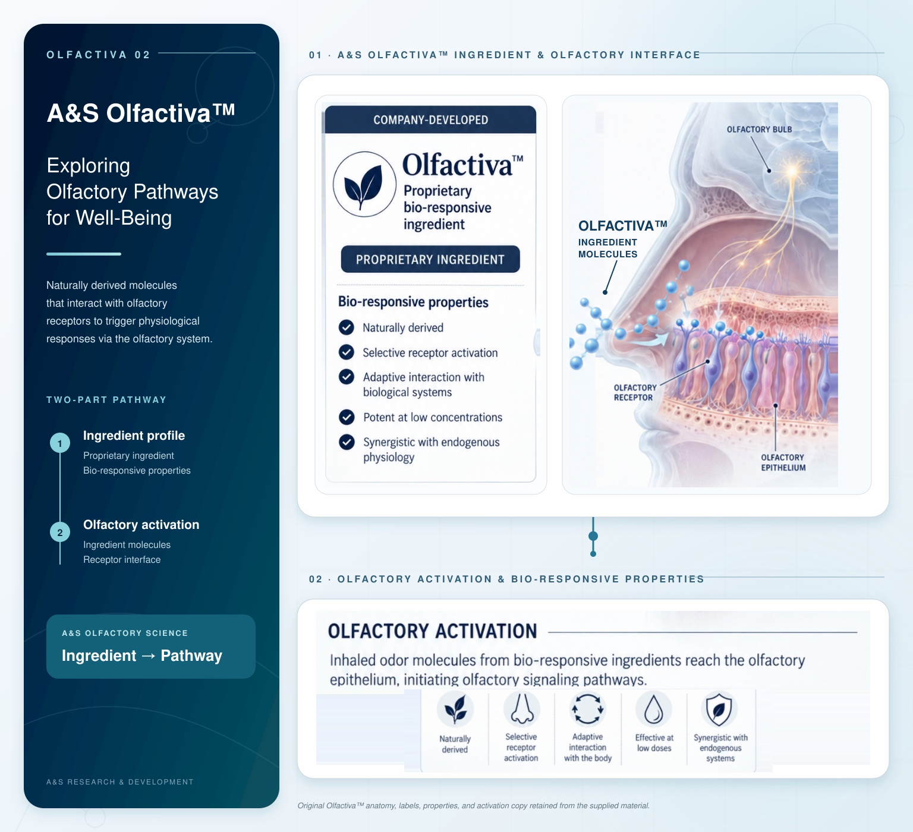

01 · A&S OlfactivaTM Ingredient & Olfactory Interface
Company-Developed

OlfactivaTM
Proprietary
bio-responsive
ingredient
Proprietary Ingredient
Bio-responsive properties
- Naturally derived
- Selective receptor activation
- Adaptive interaction with biological systems
- Potent at low concentrations
- Synergistic with endogenous physiology
02 · Olfactory Activation & Bio-Responsive Properties
Olfactory Activation
Inhaled odor molecules from bio-responsive ingredients reach the olfactory epithelium, initiating olfactory signaling pathways.
Naturally derived
Selective receptor activation
Adaptive interaction with the body
Effective at low doses
Synergistic with endogenous systems
Original OlfactivaTM anatomy, labels, properties, and activation copy retained from the supplied material.